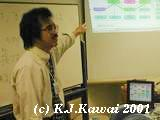

河合 和久
ホームページ
子ども開放プラン「ネットワークのしくみ」より
Intro. to ICT.(c)（ＩＣＴ基礎ｃ）
【Moodle LMS へ】
(2023. Spring Semester.)
ソフトウェア演習Ｉａ
【教務情報システムへ】
【Moodle LMS へ】
(2023. Spring First Half Semester.)
情報教育学特論
【Google Classroom へ】
(2023. Spring Semester.)
東三河サイエンスカフェ
(2007.10.04--)
愛知県高文連 自然科学専門部 情報講習会
(2023.08.06.)
豊橋プログラミング教育勉強会
(2020.01.11--)
Summer TECH-CAMP 2023
(2023.08.22--23.)
ソフトウェア設計論【遠隔のみ】
シラバス
(2023. Autumn Semester.)
オフィスアワー（予定表）
Copyright (c) 1994-2023, Kazuhisa Kawai, All rights reserved.
Please send comments to kawai@tut.jp
Last updated July 6, 2023.
Since May 31, 1994.